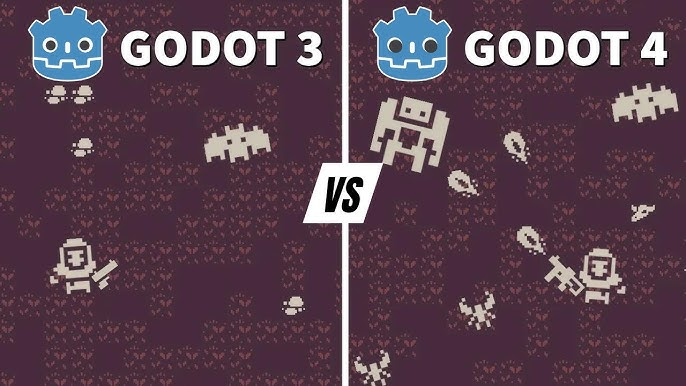
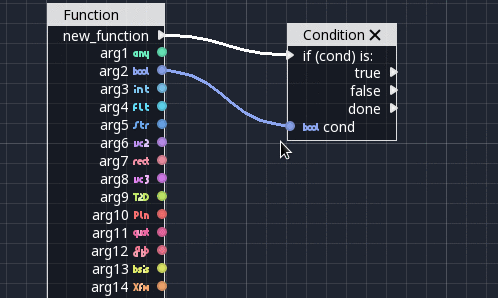
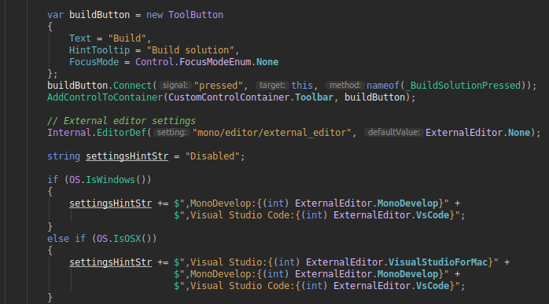

* VEILLE : LA RÉVOLUTION GODOT ENGINE
* 1. L'Évolution : Du Pixel au Photo-réalisme
Godot a connu une transformation radicale avec sa version 4.0. Le passage au moteur de rendu Vulkan permet aujourd'hui de rivaliser avec les grands noms de l'industrie tout en restant extrêmement léger.

* L'évolution du moteur de rendu : de l'OpenGL simple à la puissance de Vulkan.
- Versions 3.x : Excellentes pour la 2D et le mobile, mais limitées pour les projets 3D ambitieux.
- Versions 4.x : Introduction du rendu "Forward+" et de technologies d'éclairage global en temps réel.
* 2. Une Architecture Unique : Scènes et Nœuds
La force de Godot réside dans son organisation : tout est une scène. Cette approche modulaire facilite énormément le travail en équipe et la réutilisation du code.

* L'arborescence de nœuds : une logique propre et hiérarchisée.
Pourquoi c'est mieux ? Contrairement à Unity où les composants sont attachés à des objets, ici vous imbriquez des scènes les unes dans les autres, créant une structure parfaitement propre.
* 3. L'atout .NET : La puissance du C#
Pour un développeur SLAM, Godot est le choix logique car il supporte nativement **.NET 8/9**. Vous pouvez utiliser toutes vos connaissances en C# acquises sur vos autres projets.

* Intégration parfaite du C# avec Visual Studio 2022.
Verdict Economique : * Unity/Unreal : Taxes et redevances complexes. * Godot : 0% de frais, Open Source et totalement gratuit.